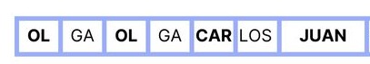
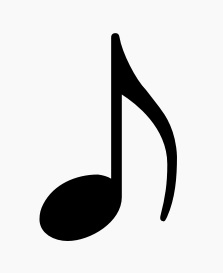
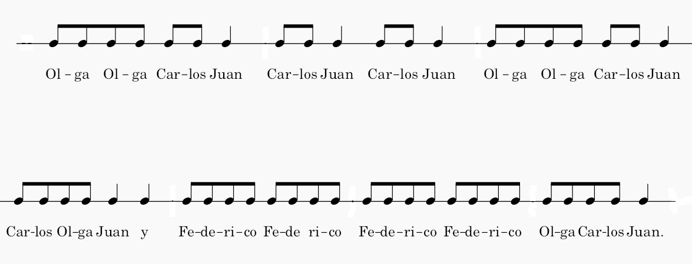

Negras y corcheas
Tomando en cuenta a la figura musical negra como unidad, seguimos viendo como entender el juego "Olga, Carlos, Juan" desde el código musical.
Retomamos un fragmento de la cuadrícula donde el juego aparece escrito.

Ya vimos que la palabra Juan, y su duración del sonido lo asociamos a nuestro pulso, a la figura musical negra y por lo tanto a nuestra unidad.
¿Pero qué pasa con la palabra de dos sílabas Olga?
Lo que ocurre con esta palabra es que contiene dos sonidos, que como ya vimos, uno coincide con el pulso y el otro no, pero están dentro del mismo pulso, es decir suenan los dos dentro de un mismo tiempo (unidad).
Cada uno de estos sonidos (Ol y ga) corresponden a la figura musical corchea, teniendo cada sílaba la misma duración (medio pulso cada una).
Escucha como suena:
También te presentamos una versión para piano y palmas del mismo fragmento, donde el piano interpreta las palabras con su respectivo ritmo y las palmas realizan el pulso.
Cuando hay más de una corchea, como en este caso, se unen con una línea arriba (barra) como puedes ver en la imagen anterior.
Cuando la figura musical corchea aparece sola, su representación gráfica es la siguiente:

Corchea.Ahora ya estamos listos para escribir todo el juego musical con las figuras correspondientes.
Para empezar vamos a escribir todas las figuras sobre una línea recta con el texto debajo, así asociamos el sonido, la figura musical y la palabra.

Ahora vamos a escuchar como suena una interpretación del juego completo:
Ahora escucha una interpretación de todo el juego con instrumento musical de percusión y pulso incluido.